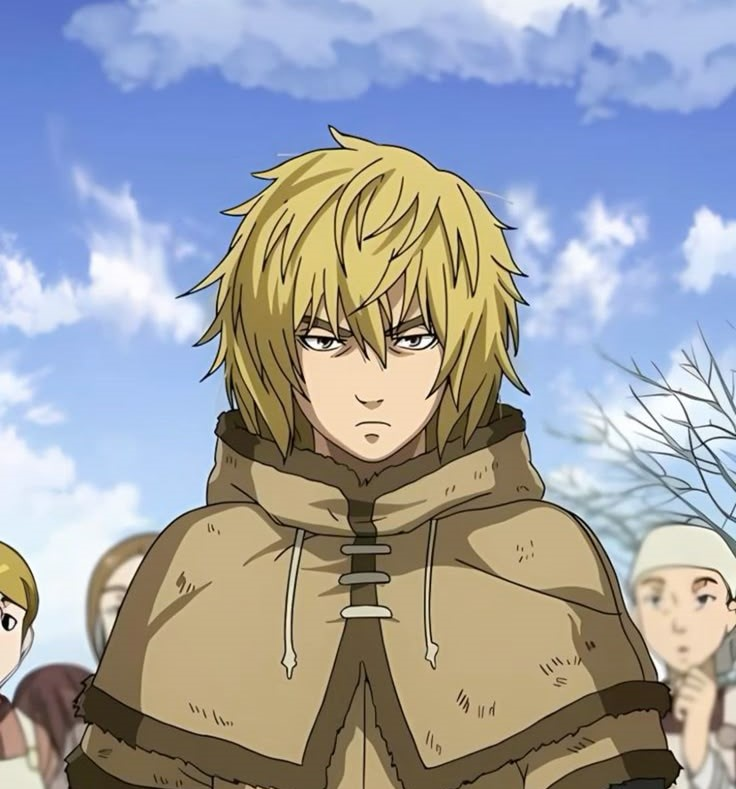
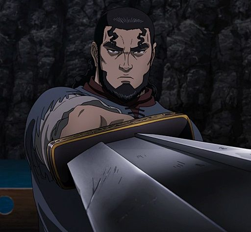
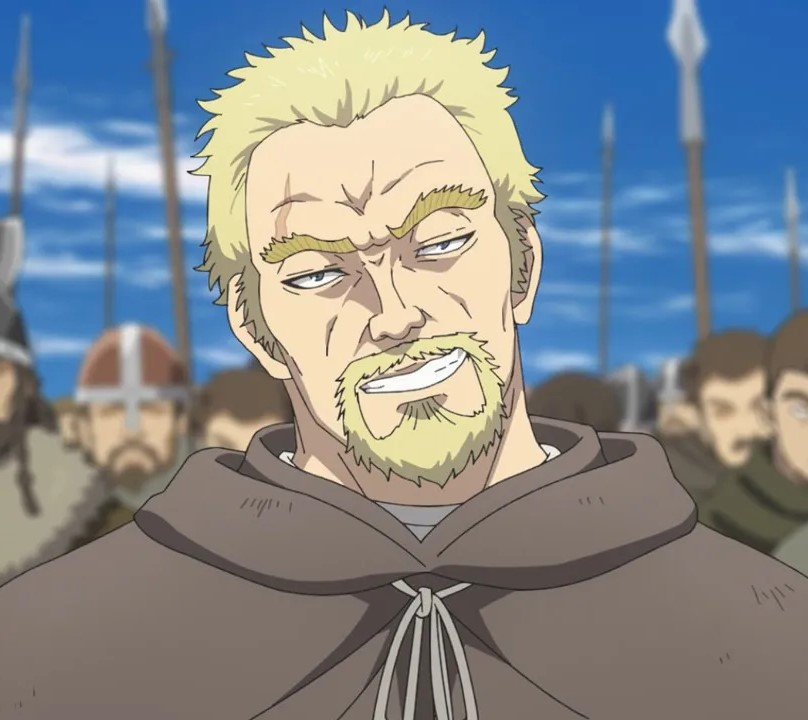
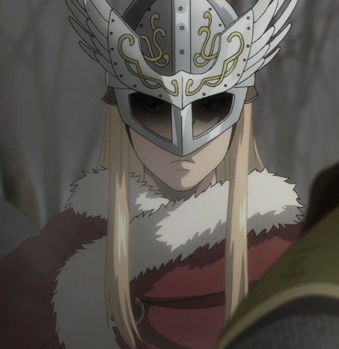
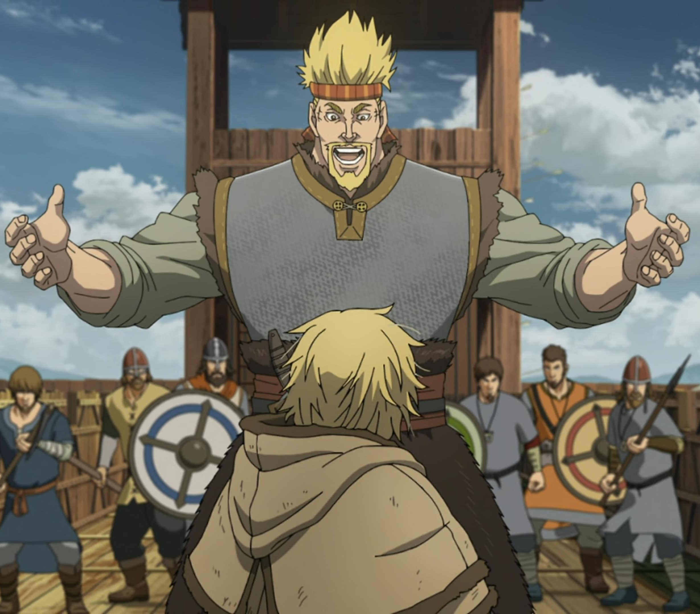
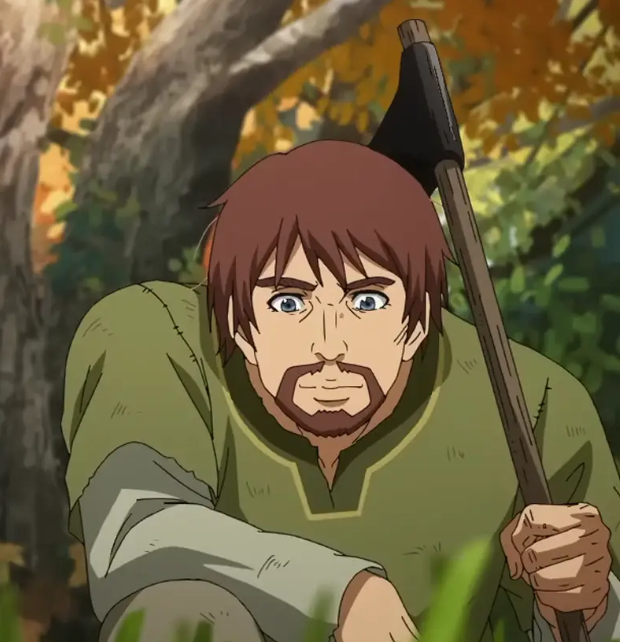
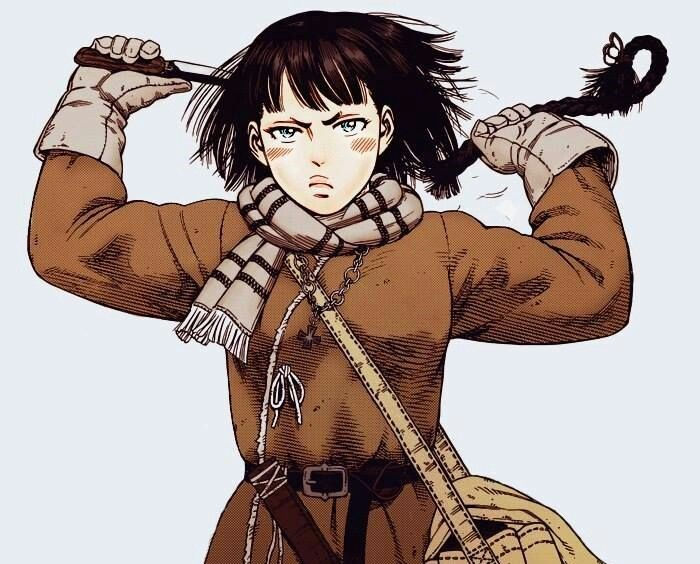
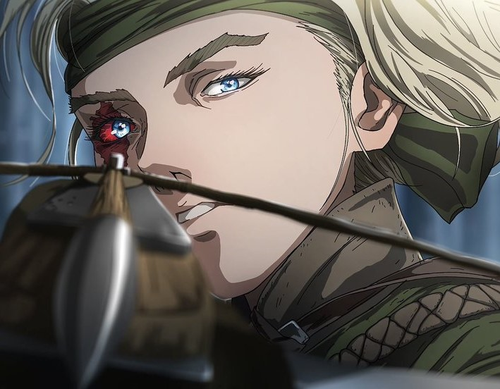

Conheças os Principais Personagens
Thorfinn
Filho de Thors, passa de uma criança alegre na Islândia a um jovem frio e implacável consumido pelo desejo de vingança, evoluindo mais tarde em busca de paz.Importância na História: Protagonista da saga. Sua jornada reflete a desconstrução do ciclo de ódio e a busca pela terra prometida de Vinland, onde pretende criar uma sociedade livre de guerras e escravidão. |
 |
Thors Snorresson
Conhecido no passado como o "Troll de Joms", Thors foi um dos guerreiros mais temidos dos Jomsvikings antes de abandonar as batalhas para viver em paz com sua família na Islândia.Importância na História: É a base moral de toda a obra. Suas filosofias sobre o que significa ser um "verdadeiro guerreiro" e sua rejeição à violência definem o rumo de Thorfinn e servem como o tema central de redenção da narrativa. |
 |
Askeladd
Um astuto e calculista líder de um bando de mercenários vikings que combina habilidade de esgrima com uma inteligência estratégica afiada.Importância na História: É o catalisador da transformação de Thorfinn. Ao mesmo tempo em que é o alvo da vingança do garoto, atua como seu mentor prático e molda os acontecimentos políticos que alteram o destino da Inglaterra e da Dinamarca. |
 |
Canuto
Príncipes dinamarquês que passa por uma mudança radical, deixando de ser um jovem tímido e dependente para se tornar um governante ambicioso e determinado.Importância na História: Representa o contraponto político de Thorfinn. Enquanto Thorfinn busca a paz se afastando da civilização, Canuto tenta criar o "Paraíso na Terra" através do uso do poder real, do controle e da força do Estado. |
 |
Thorkell
Um gigante guerreiro de força descomunal que vive puramente pelo prazer do combate e pela busca da glória nos campos de batalha.Importância na História: Encarna o ideal viking tradicional de romantização da guerra, servindo tanto como um perigoso obstáculo quanto como um aliado formidável em momentos decisivos. |
 |
Einar
Um camponês inglês cuja vida é devastada pela guerra, levando-o a trabalhar como escravo na fazenda de Ketil.Importância na História: Torna-se o primeiro grande amigo de Thorfinn após o período de guerras. Einar ensina Thorfinn sobre a importância do trabalho na terra e o ajuda a redescobrir sua humanidade e propósito. |
 |
Gudrid
Uma jovem destemida e independente que recusa os papéis tradicionais de sua época para seguir seu sonho de navegar pelos mares.Importância na História: Peça fundamental na expedição para a fundação de Vinland, trazendo um espírito livre, apoio emocional e determinação para a viagem de Thorfinn ao Novo Mundo. |
 |
Hild
Uma habilidosa caçadora e inventora que busca vingança contra Thorfinn por crimes cometidos no passado sombrio dele durante a época de mercenário.Importância na História: Atua como o lembrete constante dos erros de Thorfinn. Sua presença coloca à prova o compromisso pacifista de Thorfinn, forçando-o a buscar o perdão e o diálogo em vez das armas. |
 |